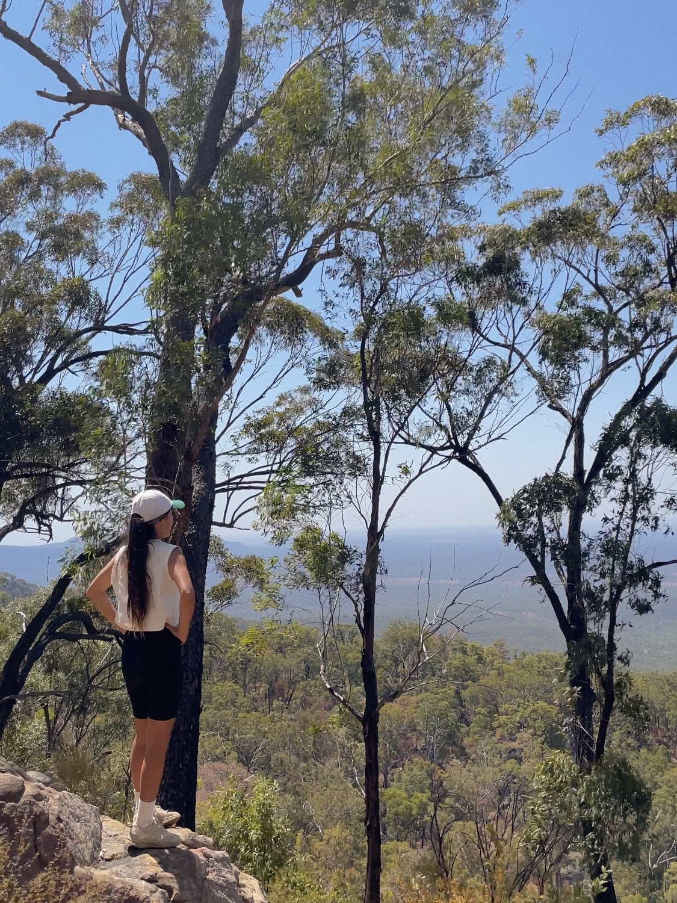

What you really need in order to live in Australia is to let go of your obsession. The obsession with schedules, plans, and certainty. I had an accident during my solo road trip. Thanks to my friends, I was able to rest in Melissa’s sheds for a while. I couldn't stop thinking about money, my plans, or even whether I'd be able to get back on the road. I kept asking myself why I had the accident. I know, It was a useless thought. One of my friends simply said, "Just enjoy it. We've got wine and a wood fire.” That made me realize the accident wasn't actually a big deal. It helped me stop overthinking and finally get some rest.
Seeing people who treat every unexpected event as just another part of life makes me wonder where their sense of ease comes from. Maybe it's because they live so closely with nature that they were born with some kind of "easygoing DNA." Or maybe they've simply experienced so many disappointments in nature that they've learned to accept whatever comes. Brett told me it's one of the wisdoms that comes with getting older and gaining more life experience. Then he added, "It's still hard, though.” Yeah, that's true. What's happened has happened. If there's nothing we can do, all we can do is stay calm and wait until it passes.


After that, I became much better at managing the stress of things not going according to my original plans. When my car broke down later, I was able to think, "At least I can solve this with money." I was safe. I wasn't hurt. For a while, I thought I had overcome my obsession with money.
I had always worried about money. I never felt like I had enough. I had to earn my own money to pay for my hobbies, dates, studying, and traveling abroad. I'm the kind of person who always feels the need to have an emergency savings account. But when I moved to Australia, I had to spend almost everything just to get started—to find work, find the right town, and find a share house. I had almost nothing left. Strangely, it didn't bother me at all. I was full of hope and excitement about starting a new version of my life.Then I injured both of my wrists at work. I was a surfer girl. I was strong. I believed I'd recover quickly. But reality wasn't so hopeful. I had to reduce my work hours because of the constant pain. Eventually, I made a workers' compensation claim. The process was horrible. They're private insurance companies, after all. There was almost no communication, endless delays, and constant uncertainty. I honestly don't recommend dealing with work cover if you can avoid it. They even tried to split my claim into two separate cases because I had injured both wrists. It was incredibly frustrating. I fell into a deep depression. I developed insomnia because of the stress. To make matters worse, I lost my job. For five months, I received no financial support at all. I was angry all the time. I hadn't done anything wrong. Why did I have to be treated like this? Did I have to go back to Korea?



I'm Korean. I can't tolerate injustice, and once I believe something is unfair, I fight until the very end. So I decided to stay in Australia and fight. My partner used to say one thing to me all the time: "Let go.” I understood what he meant intellectually, but I couldn't truly accept it. How could I let go? It felt impossible. Seven months passed like that. And I think I'm finally beginning to understand what he meant. I was torturing myself by holding onto my anger. While I was burning with resentment, they were probably enjoying their holidays, spending time with their family, and living their lives. In the end, I was the one making life harder for myself.
One day, one of my friends sent me a link to a fun psychology test. I had to choose the emotions that resonated with me, and one of them was anger. Then it asked me to choose the opposite word. I chose 아량. Other options included forgiveness and indifference. But how do you express 아량 in English? The word grace came to mind. To me, grace means staying composed with dignity and refusing to be controlled by emotion. Yeah. I think I want to embrace grace.
Not for them. For my own freedom.